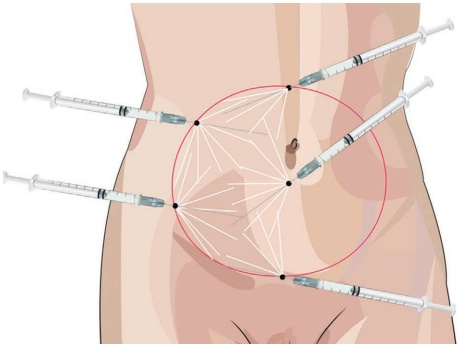
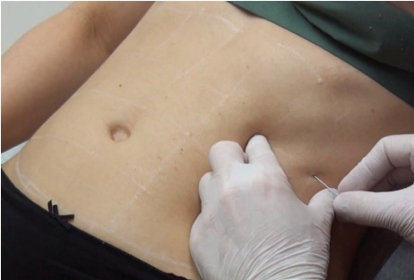
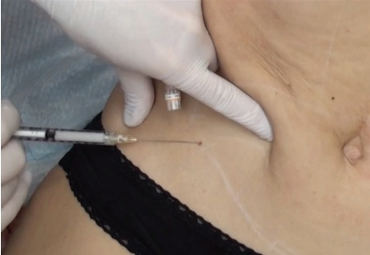
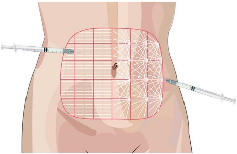
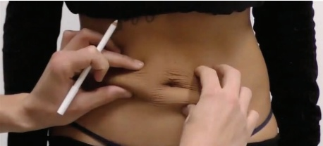
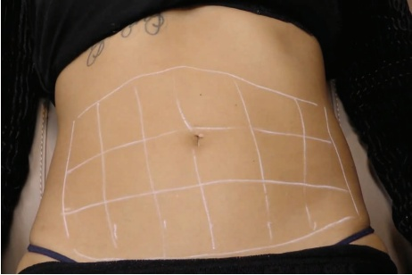
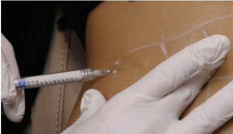

31 颈部、胸部和腹部：腹部皮肤再年轻化
腹部皮肤的颈部、胸部和腹部再塑
PIETER SIEBENGA 和 JANI VAN LOGHEM
31.1 引言
腹部皮肤可能因妊娠或体重显著减轻而发生永久性松弛，导致出现妊娠纹、松弛和真皮层变薄。考虑到并发症的风险、较长的恢复期以及较高的成本，手术方法（例如腹壁成形术或“腹吸”）对大多数患者来说影响过大。因此，非侵入性或微创程序正变得越来越受欢迎。稀释的羟基磷灰石钙（CaHA）可用于治疗腹部皮肤松弛。这是一种更安全、更经济的方式来改善皮肤质量且无需停工期。
31.2 解剖学危险点
注射应尽可能接近真皮层（真皮-真皮下交界处）。应检查患者是否有脐疝，并注意使用钝性套管针或锐针避免进入疝气区。浅表和穿通静脉可能存在瘀斑的风险，但不会引起严重不良事件的风险。
31.3 腹部钝性套管针技术
有关注射定位，参见图 31.1。

31.3.1 分步技术
-
对腹部进行消毒。
-
标记需要治疗的区域。通常是脐周椭圆形区域（图 31.2）。
-
使用每 100 cm² 表面积 1.5 mL CaHA。椭圆的表面积计算公式为宽度 (cm) × 长度 (cm) × π/4。在本示意图中，椭圆的宽度约为 20 cm；高度约为 15 cm，因此表面积约为 20 × 15 × 3.14/4 = 236 cm²。因此，要治疗本例中的腹部区域，大约需要两到三支 1.5 mL 的注射器。
-
将 CaHA 稀释至 1:1 至 1:3（取决于松弛的严重程度），并使用 25G、50 mm 的钝性套管针或 22G、70 mm 的钝性套管针。
-
从下方的入口点开始。可以考虑弯曲钝性套管针以方便操作注射器。
-
向注射方向拉伸皮肤，以控制钝性套管针的正确深度。确保钝性套管针位于真皮-真皮下交界处（图 31.3）。
-
以扇形模式缓慢注射每侧逆行注射 0.05–0.1 mL，并使针尖朝上。
-
重复此过程，直到所有标记的皮肤都覆盖了一层稀释的 CaHA。



31.4 腹部注射技术
关于注射定位，参见图 31.4；关于腹部评估，参见图 31.5。
31.4.1 分步技术
-
对腹部进行消毒。
-
标记需要治疗的区域（图 31.6）。
-
使用每 100 cm² 表面积 1.5 mL CaHA。在所示的示意示例中，每侧使用约 13–14 个 4 × 4 cm 的方块，总计 208–224 cm²。这意味着在此示例中治疗腹部总共需要大约两到三支注射器。
-
将 CaHA 稀释至 1:1 至 1:3（取决于松弛的严重程度），并使用 27G、19 mm 的针或 27G、40 mm 的针。



-
从外侧向内侧操作。
-
拉伸皮肤以控制正确的注射深度。确保针位于真皮-真皮交界处（图 31.7）。
-
缓慢地进行每次逆行注射约 0.05 mL。可使用扇形技术（左侧
患者在图 31.4 的位置) 或逆行线性丝（图 31.4 患者右侧）。
- 重复此过程，直到所有标记的皮肤都覆盖了一层稀释的 CaHA。
31.5 术后护理
可进行轻柔按摩以达到均匀分布，但使用低剂量逆行线性丝（高倍稀释的 CaHA）时并非必需。应在三到四个月后评估效果。如有必要，届时可考虑进行追加治疗。
31.6 实现最佳效果的附加治疗
减小皮下脂肪可能对部分患者有益。额外的刺激新生胶原形成的疗法将改善预后（微焦超声、射频、激光、去角质、针刺等）。